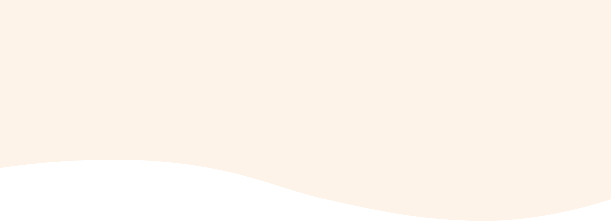
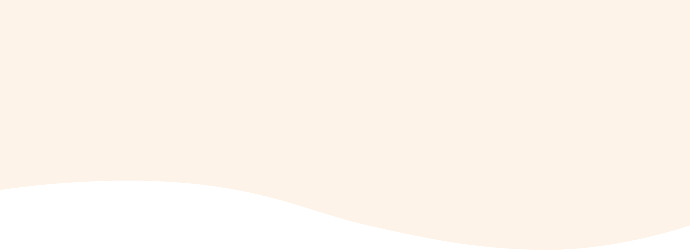

2023
12/26
———————————————
參與台北寵物論壇，爭取貓咪友善環境
炎炎夏日的周六，我走進了台北寵物論壇，帶著一副貓耳髮箍，決定要全力宣傳「貓咪至上」的理念！我相信，我們的都市中，每一隻貓咪都應該有自己的 VIP 休憩空間。
 

About me
我堅信，藉由推動更完善的貓咪福利和相關政策，更是間接地投資於台灣的未來。畢竟，民眾的身心健康與工作熱情是推動經濟的核心動力。透過完善的貓咪福利政策，為台灣的 GDP 經濟帶來巨大效益。
因此，我期望能在立法院內推進這些政策，確保每一隻貓咪都能得到他們應有的照顧，同時也為台灣的經濟發展助一臂之力。讓我們一同護航台灣的幸福經濟，從照顧每一隻貓咪開始。


Miao Li-Han
Last Activity
參與台北寵物論壇，爭取貓咪友善環境
炎炎夏日的周六，我走進了台北寵物論壇，帶著一副貓耳髮箍，決定要全力宣傳「貓咪至上」的理念！我相信，我們的都市中，每一隻貓咪都應該有自己的 VIP 休憩空間。

掃街模式開啟！帶著你的貓耳，來和我一起走！
街上氣氛真的很棒，從小孩到大人，甚至有些狗狗朋友都帶著貓耳來找我握手，真的太可愛了！這次的活動不僅讓我看到大家的熱情，更加堅定了我推進「貓咪友善環境」政策的決心。

收容所模特兒大比拼！
今天的收容所不再是一片寂靜。為了讓更多人認識到這裡的毛孩子，我們舉辦了一場前所未有的「模特兒走秀」！
Policy
為毛孩子謀福利！推動寵物醫療保障方案
打造休閒天堂！推廣寵物休閒與娛樂場所
推廣寵物飼養教育，讓愛更加專業
Donate
喵星人之友
已有 9,957 人贊助
眾所皆知貓是外星人派來統治地球的。但牠們發現，只要一直喵喵叫，就能吃到很多好吃的，所以牠們決定要收人類為僕。除了飲食外，玩樂也是相當重要，要時刻注意主子的運動量，才能活得長長久久喔
捐款新台幣
已成功捐款!
謝謝您的支持，您的支持是我們最大的動力
對單一貓星人捐贈額度規定
個人捐贈：10罐罐 / 天
對不同貓星人：一天最多十個罐罐
對流浪貓星人：一天最多五個罐罐
貓星人團體：一天最多三十個罐罐
Feedback
您的聲音，我們的行動！
親愛的鄉親，每一位市民的意見都是我們社區前進的原動力。 無論大小事，我都誠摯希望聽到您的建議。分享您的想法，一同為我們的未來打造更美好！
姓名
手機
建言